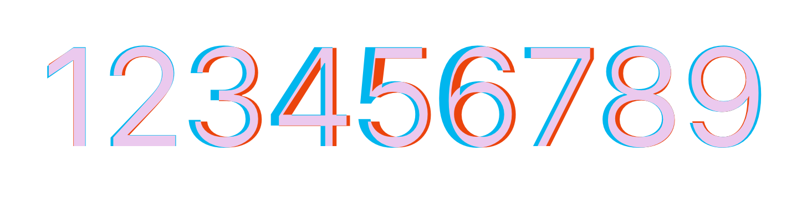
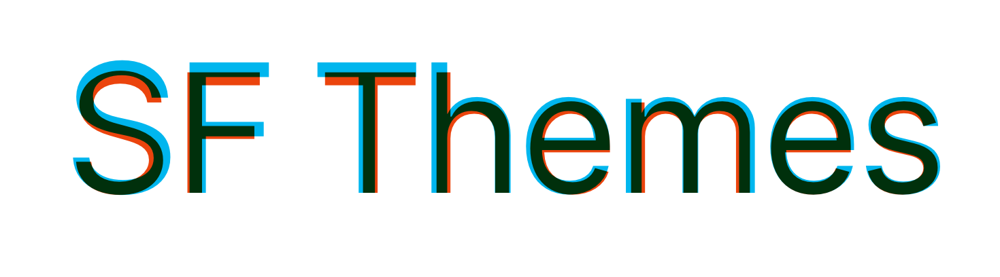

Both themes are compatible with SF Pro and Inter typefaces. While I was hoping to fully utilize SF Pro family — due to licensing and rendering/compatibility issues — I opt for Inter as the primary font family of the package.
Inter is a free and open source typeface, and you are free to use it in almost any way imaginable.
Inter is closely related to SF Pro. Like SF Pro, it is crafted and designed for computer screens, therefore sfthemes plots with Inter fonts will look a lot like their SF Pro variants.
Inter vs SF Pro 

San Francisco typeface consists of three large family of typefaces, SF Pro, SF Compact, and SF Mono. They are degined to be used in different Apple platforms, e.g., iOS, macOS. Each family has its own characteristic and is optimized for certain screen size and resolution. sfthemes is optimized for SF Pro, the most general variant of the typeface designed for iOS, iPadOS, and macOS.
Apple restricted the usage of the entire SF typeface family for developers who are designing and developing applications or material for Apple’s platforms. Please keep this resctriction in mind when using and sharing your plots, if you are using SF Pro as the main typeface of the plots.
Distribution and repackaging of the San Francisco family is prohibited, however, the fonts can be downloaded directly from Apple’s website. Download SF Pro
sfthemes has adjsuted and adapted all available dynamic type sizes as presented in Apple’s HIG. sfthemes size classes are based on iOS font sizes with minor compatibility modifications. In total, there are 7 size classes available — i.e., xSmall, Small, Medium, Large, xLarge, xxLarge, xxxLarge — with Medium being the default class.
| class | Title | Subtitle | Body | Ticks |
|---|---|---|---|---|
| xSmall | 14 | 12 | 10 | 9 |
| Small | 15 | 13 | 11 | 10 |
| Medium | 16 | 14 | 12 | 11 |
| Large | 17 | 15 | 14 | 12 |
| xLarge | 19 | 17 | 15 | 14 |
| xxLarge | 21 | 19 | 17 | 16 |
| xxxLarge | 23 | 21 | 19 | 18 |